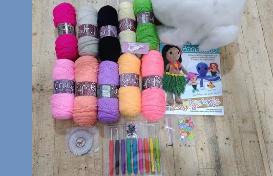

|  | Nuestra historia comenzó en Marzo del 2024 con la creación del concepto, posteriormente en julio del mismo año comenzamos con pedidos en línea, en Otoño del 2024 incorporamos el concepto de materiales ecológicos y sustentables, esto con el fin de ofrecer una experiencia mas responsable y completa a nuestra querida comunidad, el compromiso es seguir consolidando la marca, como también las marcas que participan con nosotros, ven a ser parte de esta bonita comunidad. |
esto con el fin de ofrecer una experiencia mas responsable y completa a nuestra querida comunidad, el compromiso es seguir consolidando la marca, como también las marcas que participan con nosotros, ven a ser parte de esta bonita comunidad. |
| Misión; Somos el enlace entre los productos y el consumidor, esto mediante la reunión de marcas innovadoras, ofreciendo una experiencia única con los consumidores y dando un seguimiento con los clientes. Ademas de ofrecer un espacio físico para degustar de una excelente taza de café y un espacio agradable. Visión; Nuestro objetivo es el posicionamiento de la marca en el centro y sur de la CDMX con tiendas en las mas importantes zonas comerciales, así como con una fuerte presencia en redes sociales y pagina web. |